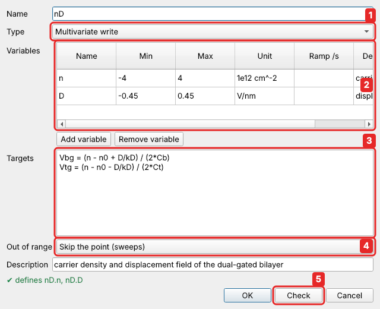

Composite channels¶
Composite channels are software channels built on aliases, and on each other. There are three types:
| type | what it is | example |
|---|---|---|
multivariate write (multi) |
named variables; hardware channels are formulas of them | detuning ε and energy U driving two gates |
composite read (read) |
a read-only formula of other channels | resistance V / I |
simple mapping (map) |
a one-to-one view of one channel, with forward and backward formulas | a setpoint in °C on a controller in K |
Defining one¶
In Instruments & channels, on the Channels (composite) tab, click Add…. The editor has a type selector, a variables table and the formulas. Check runs every check described below without defining anything, and shows which channels the composite would define; OK checks first and keeps the editor open if the check fails:

Tutorial 2 builds this one step by step: the
carrier density n and displacement field D of a dual-gated sample, driving the two
gate voltages, in a composite nD. Once defined, the variables are channels like any
alias, named nD.n and nD.D: they appear in the Manual panel, can be swept,
recorded and monitored. The table lists them below their composite:
| Name | Type | Definition |
|---|---|---|
| nD | Multivariate write | Vbg = …; Vtg = … |
| ↳ nD.n | variable | −2 … 2 1e12/cm² |
| ↳ nD.D | variable | −0.5 … 0.5 V/nm |
Multivariate write¶
Several variables, whose names you choose, drive several channels (the targets): any
writable channels with a number - aliases (with their limits and ramp rates), other
composite channels, or channels of an instrument (src.V1, written as they are):
From Python
Each variable is now a channel of its own, named after the composite:
gates.eps and gates.U, with its own minimum, maximum, unit and ramp rate:
From Python
c.call("read_channel", name="gates.eps") # nan: never set yet
c.call("set_many", values={"gates.eps": 0.1, "gates.U": 0.3})
# {'Vx': 0.4, 'Vy': 0.2} (the hardware values that were set)
c.call("read_channel", name="gates.eps") # 0.1: the value it was last set to
c.call("write_channel", name="gates.U", value=0.1) # eps stays 0.1 → Vx = 0.2, Vy = 0.0
Names
Inside the composite's own target formulas, the variables go by their short
names (U + eps). Everywhere else (the Manual panel, sweeps, scripts, other
formulas, the Monitor, data files) they go by the full name gates.eps. So two
composites may both have a variable x (a.x, b.x), and a variable never
clashes with an alias or a parameter. A composite may not have the name of an
instrument (dmm.x would read like an instrument channel).
Setting one variable recomputes only the targets that depend on it, using the other variables' last values.
The first setting
While a variable has never been set, the targets that need it cannot be
computed, so setting gates.eps alone fails with a message naming the missing gates.U.
Set the variables together the first time. In the Manual panel the variables
show NaN until then, with hold forced on: click Set all to zero, or
type a value for each, then click Set all.
In a script or from Python, use set_many. A sweep sets them together by
itself (below).
Limits and ramps¶
Everything is checked before anything is written: the variables' limits, and the
limits of every alias the targets end on. A value that would drive Vx beyond its
alias limit is refused, and no channel moves.
Ramps keep every channel within its own rate at the same time: the variable's
ramp_rate and each target alias' ramp_rate. This also holds along non-linear
relations: with targets={"VL": "q**2"}, moving q from −1 to 1 drives VL
1 → 0 → 1, at no point faster than VL's rate.
Out of range¶
Often the region you want in the variables doesn't fit in the box the hardware
limits allow: a rectangle in \((n, D)\) is a tilted rectangle in \((V_{bg}, V_{tg})\), and
its corners may need more than ±10 V. Out of range in the composite editor
(out_of_range in the definition) decides what happens when a combination of the
variables would drive a target outside its limits:
| Out of range | in a sweep | set by hand or from a script |
|---|---|---|
Skip the point (skip, the default) |
the point is skipped before any channel is set, as if a point action called skip_point() first: nothing moves and its data stay NaN. Validation says how many points will be skipped |
refused, with the reason |
Error (error) |
the sweep is refused by validation, naming the first bad point | refused |
Clamp to the limit (clamp) |
the target is set to the nearest end of its range; the point is measured | the same |
Skip suits maps (the region the hardware can reach is measured, the rest is left empty). Error is for measurements where every point matters. Clamp suits targets where the nearest reachable value is good enough. Note that with Clamp a point is labelled with variable values the hardware did not quite reach.
In sweeps¶
Variables of one composite are always set together:
- swept in the same dimension, they are set together at every point;
- swept in different dimensions (
nD.ninner,nD.Douter), the outer variable is not written on its own: at every inner point both are set together. So a newDnever moves the gates with the oldnleft over from the previous line, and every combination the hardware sees is one of the sweep's points, checked in advance.
Validation checks every combination the sweep will set (all at once, so even a 1000 × 1000 map takes a fraction of a second) and says how many points of the sweep will be skipped.
A few details:
- A skipped point runs its pre-sweep point action (it comes first), but nothing after it: no channel is set, no delay, no recording.
- An outer-dimension variable recorded in its own dimension is recorded as its setpoint.
- With a non-linear formula, the allowed region can have holes: between two allowed points the formula may need a gate beyond its limit. The ramp between them then moves each gate on a straight line in gate voltage instead of following the formula. That line is always inside the limits, and nobody measures during a ramp.
- A sweep in which every point is skipped still finishes, with all-NaN data.
Formulas¶
Targets may use any expression of the variables and
of the setup's parameters (Vbg = (n - n0 + D/kD) / (2*Cb); the
variables by their short names here),
including piecewise functions and vectors. The formulas of reads and mappings may use
parameters too.
From Python
Composite read¶
A read-only channel computed from others: aliases, variables, mappings, other reads,
parameters, or channels of an instrument (lockin.X).
The classic case is a resistance from two lock-ins, one measuring the voltage
(\(V_{xx}\)) and one the current (\(I\)): a composite read Rxx with the formula
Vxx / I and unit Ω. In the editor, choose the type Composite read and type the
formula; the line below it lists the channels it may use.
Tutorial 2 sets
this up step by step.
Reading the channel reads its inputs and evaluates the formula. Other examples: a
conductance 1/Rxx, a difference (V1 - V2)/2, a power in dB 10*log10(P).
From Python
Reads can be recorded in sweeps and monitored like any channel. Vector inputs give vector results. A NaN input (e.g. a variable never set) gives NaN.
Simple mapping¶
A one-to-one software view of one channel. forward gives the target y from
x, and backward gives x back from y:
From Python
Reading the mapping really reads the hardware, so a change made to the instrument directly is seen.
The inverse check¶
When a mapping is defined, forward and backward are checked to be each other's
inverse over the whole [min, max] range. The range is sampled densely (also
logarithmically for wide ranges) and checked within tolerance, which defaults to
1e-6 × range. The error names the worst point:
From Python
Piecewise mappings are fine, as long as they are one-to-one:
From Python
A mapping may also have its own ramp_rate (in its units per second), and a
tolerance for formulas that are inverse only to some precision:
From Python
If the mapping's range reaches beyond the target alias' limits, the definition returns a warning. Values beyond the alias limits are still refused when set.
Nesting¶
Composites can drive each other. A mapping can target a variable, and a multivariate write can target another composite's variables or a mapping:
From Python
c.call("define_composite", type="map", name="eps_mV", target="gates.eps",
forward="x/1000", backward="1000*y", min=-400, max=400, unit="mV")
c.call("define_composite", type="multi", name="outer", variables=["s"],
targets={"gates.U": "0.2 + s", "eps_mV": "100*s"})
c.call("write_channel", name="outer.s", value=0.1)
# U = 0.3, eps = 0.01 V → Vx = 0.31, Vy = 0.29
On every write:
- every hardware channel is computed once, even when it is reached through several paths;
- two requests in one write that give the same channel different values are refused;
- everything is limit-checked before anything is written;
- ramps keep every alias, variable and mapping within its own rate.
Circular dependencies¶
Loops are refused when they would be defined, and the old definition is kept:
From Python
A runtime guard also stops a loop that slipped in some other way within a fraction of a second, so a call can never hang the backend. A channel cannot be removed or redefined away while another composite uses it.
Sweeping composites¶
Variables and mappings can be swept like aliases. Variables of one composite that are swept in the same dimension are set together at every point, so even the first point works before they have ever been set:
{"points": 51, "sweep": [{"channel": "gates.eps", "start": -0.2, "stop": 0.2},
{"channel": "gates.U", "start": 0.1, "stop": 0.3}],
"record": ["Vx", "Vy", "Vdiff"]}
All combinations are limit-checked before the sweep starts.
In scripts¶
set_many({"gates.eps": 0.0, "gates.U": 0.25})
set("gates.eps", 0.1) # gates.U stays 0.25
print(get("Vdiff"), get("Tset_C"))
Checking without defining¶
check_composite takes the same arguments as define_composite and returns the
channels it would define and any warnings, without changing anything:
From Python
Reference¶
| type | fields |
|---|---|
multi |
name, variables (names or {name, min, max, unit, ramp_rate, description}), targets {channel: formula}, out_of_range (skip (default), error or clamp), description |
read |
name, expression, unit, description |
map |
name, target, forward (of x), backward (of y), min, max (required), unit, ramp_rate, tolerance, description |
A multivariate composite's variables are channels named composite.variable.